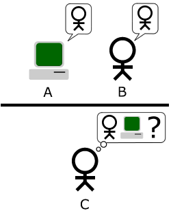

¿Qué es?

El Test de Turing es una prueba propuesta por Alan Turing en 1950 con el objetivo de analizar la capacidad de una máquina para demostrar un comportamiento inteligente similar al de un ser humano. La idea fue presentada en su trabajo Computing Machinery and Intelligence y se convirtió en una de las propuestas más conocidas dentro del campo de la inteligencia artificial.
Objetivo
El objetivo principal del Test de Turing es determinar si una máquina puede comportarse de una manera tan parecida a una persona que resulte difícil distinguirla de un ser humano. Turing consideraba que una máquina podría ser considerada inteligente si lograba responder preguntas, mantener conversaciones y actuar de manera similar a una persona.
La prueba no busca analizar emociones o pensamientos reales, sino observar si las respuestas producidas por la máquina pueden parecer humanas. El objetivo era encontrar una forma práctica de evaluar la inteligencia artificial sin depender únicamente de definiciones teóricas.
Funcionamiento
El funcionamiento del Test de Turing consiste en la participación de un evaluador que mantiene una conversación con dos participantes diferentes: una persona y una máquina. El evaluador no puede verlos directamente y solo recibe sus respuestas por medio de mensajes escritos o una interfaz de comunicación.
Durante la conversación, el evaluador realiza preguntas sobre distintos temas para intentar identificar quién es humano y quién es una máquina. Si después de un tiempo el evaluador no puede diferenciar correctamente a la máquina de la persona, se considera que la máquina logró superar la prueba.
Impacto actual
El Test de Turing tuvo un gran impacto en el desarrollo de la inteligencia artificial y la informática moderna. A partir de esta propuesta comenzaron a desarrollarse investigaciones relacionadas con el comportamiento inteligente de las máquinas y la posibilidad de crear sistemas capaces de aprender y tomar decisiones.
Con el paso de los años surgieron debates sobre si esta prueba realmente es suficiente para determinar la inteligencia de una máquina, ya que algunos especialistas consideran que imitar una conversación humana no necesariamente significa comprender o pensar. A pesar de eso, el Test de Turing continúa siendo una referencia histórica y uno de los conceptos más importantes dentro del estudio de la inteligencia artificial.